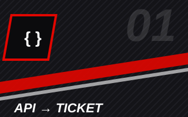

Tickets automáticos en Odoo
Integración que consulta incidentes de ciberseguridad por API y crea el ticket en el Helpdesk de Odoo.
- Python
- Odoo 15
- API REST
- OAuth 2.0
Ver detalles
Proyecto de mejora en ITS InfoCom. Consume la API con OAuth 2.0, recorre la paginación, convierte las prioridades al formato de Odoo y evita tickets duplicados.